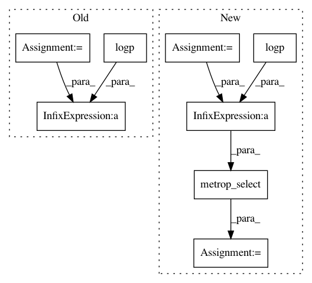

6f0013f18e9ddeba5c2d5d40101d693d02f6c0e7,pymc3/step_methods/metropolis.py,BinaryGibbsMetropolis,astep,#BinaryGibbsMetropolis#Any#Any#,257
Before Change
if self.order == "random":
nr.shuffle(order)
q_prop = np.copy(q0)
q_cur = np.copy(q0)
for idx in order:
q_prop[idx] = True - q_prop[idx]
q_cur = metrop_select(logp(q_prop) - logp(q_cur), q_prop, q_cur)
q_prop = np.copy(q_cur)
return q_cur
After Change
nr.shuffle(order)
q = np.copy(q0)
logp_curr = logp(q)
for idx in order:
curr_val, q[idx] = q[idx], True - q[idx]
logp_prop = logp(q)
q[idx] = metrop_select(logp_prop - logp_curr, q[idx], curr_val)
if q[idx] != curr_val:
logp_curr = logp_prop
return q
In pattern: SUPERPATTERN
Frequency: 3
Non-data size: 8
Instances
Project Name: pymc-devs/pymc3
Commit Name: 6f0013f18e9ddeba5c2d5d40101d693d02f6c0e7
Time: 2016-10-13
Author: wanderer2@gmail.com
File Name: pymc3/step_methods/metropolis.py
Class Name: BinaryGibbsMetropolis
Method Name: astep
Project Name: pymc-devs/pymc3
Commit Name: d3443536f3d4e39d5e0b8f90e1f9d0e25af77713
Time: 2013-05-06
Author: chris.fonnesbeck@vanderbilt.edu
File Name: pymc/step_methods/metropolis.py
Class Name: BinaryMetropolis
Method Name: astep
Project Name: pymc-devs/pymc3
Commit Name: 120e438fcd6357fc81a979d92b39b2bd7101dd34
Time: 2013-05-05
Author: chris.fonnesbeck@vanderbilt.edu
File Name: pymc/step_methods/metropolis.py
Class Name: BinaryMetropolis
Method Name: astep